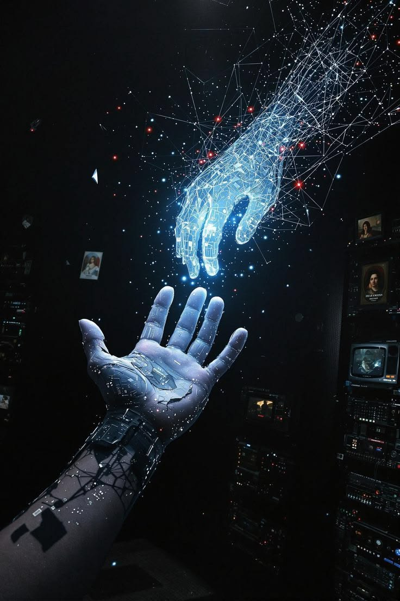
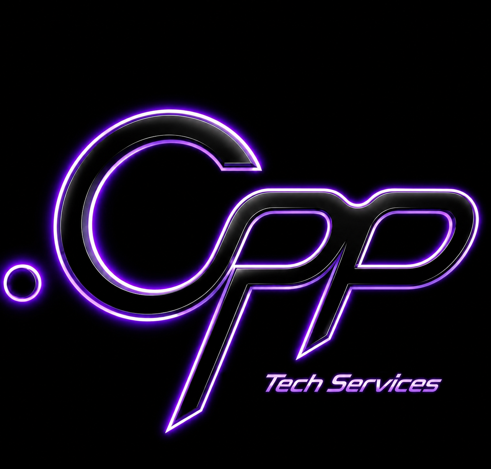
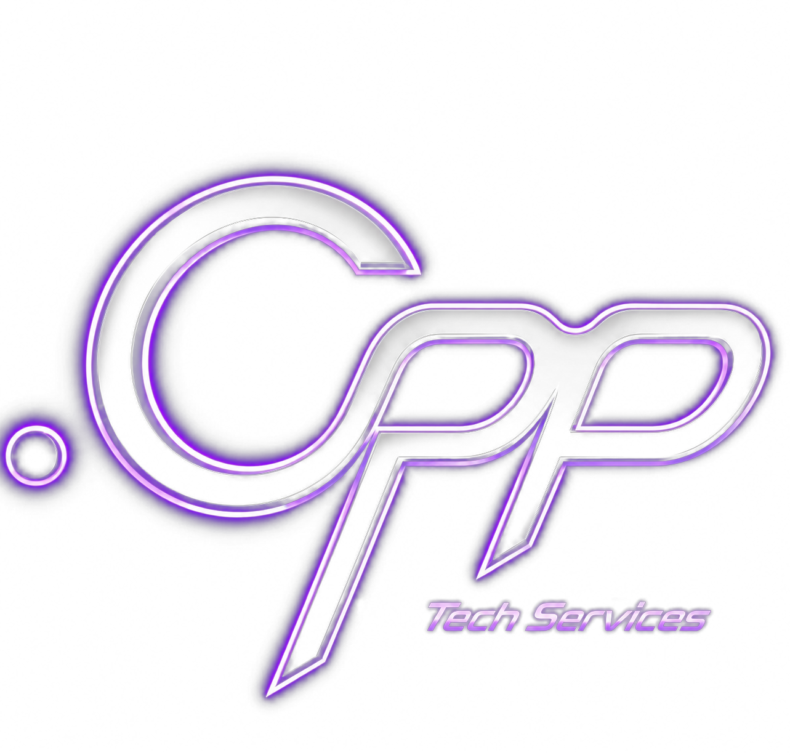

Conecte-se
Nossos serviços variam em fornecimento de identidade digital para os nossos clientes por meio de sites, auditorias de segurança e formações no ramo da TI por meios mobiles, além disso, fornecemos serviços de organização por estrutura e inteligência de dados através das mais recente tecnologias e muito mais...
Conecte-se
A origem .Cpp nasceu da perspetiva fundamental de fornecer uma identidade digital sólida e profissional para negócios, profissionais e estudantes que procuram estabelecer-se no ecossistema tecnológico, mas encontram barreiras no alcance e na implementação prática. A busca por uma trajetória estudantil ou empresarial de sucesso no ramo da tecnologia é hoje amplamente cobiçada no mercado nacional.
Contudo, a escassez de meios acessíveis e de orientação técnica especializada atrasa este desenvolvimento. A .Cpp surge para revolucionar este cenário através do desenvolvimento de sistemas robustos e de soluções digitais personalizadas.
Resolução de problemas e diferencial
A .Cpp resolve de forma transversal a ausência de posicionamento técnico do mercado: estabelece sites
para lojas físicas isoladas, modela perfis de desenvolvimento para estudantes, e substitui ementas
físicas por menus virtuais dinâmicos em restaurantes.
O grande diferencial corporativo assenta no binómio de um preço altamente competitivo e acessível, qualidade de desenvolvimento de software rigorosa e um comprometimento intransigente em entregar a melhor experiência tecnológica ao utilizador final.
Conecte-se
Actualmente, aceitamos parcerias, aluguel de serviços e encomendas de software. Para inquéritos, colaborações, ou apenas para mais informações — entre em contacto com os canais abaixo.
Telefone
Social
Localização
Angola, Luanda
Conecte-se
Descrição do serviço Este serviço atua em duas frentes de mercado distintas, oferecendo uma solução de desenvolvimento completo que une a criação estética e funcional à segurança cibernética da informação.
Nossa infraestrutura web engloba código limpo, design responsivo para smartphones e computadores, e integração com servidores. Em todo o caso, o nosso relatório de pentest enquadra-se em mapeamento de vulnerabilidades estruturais e orientações para correção de segurança.
Área de actuação
Desenvolvimento integral de sites institucionais, plataformas de e-commerce ou catálogos digitais
otimizados para motores de busca (SEO) e com alta velocidade de carregamento. Como bónus
exclusivo de lançamento, a Cpp inclui uma auditoria de segurança básica no código (Pentest Web) antes da entrega, garantindo que o cliente comece a operar blindado contra as vulnerabilidades web mais comuns.
Para os clientes que já possuem um website ou sistema web em operação, a .Cpp oferece um serviço focado estritamente em Segurança da Informação. É realizado um teste de intrusão (Pentest Web) detalhado no sistema, simulando ataques cibernéticos reais para identificar brechas de injeção de código, falhas de autenticação ou vazamento de dados, culminando na entrega de um relatório técnico de mitigação.
Conecte-se
Descrição do serviço A .Cpp oferece uma infraestrutura de gestão que substitui processos obsoletos por decisões automatizadas baseadas em dados reais. O ecossistema operacional divide-se de acordo com o nível de maturidade digital do cliente.
Na era digital, ter tecnologia não basta. É preciso estratégia. Nosso serviço de gestão e inteligência de dados foi pensado para empresas que querem sair do papel e migrar de forma inteligente para o mundo online.
Princípio de actuação
Primeiro fazemos um diagnóstico completo do teu negócio. Mapeamos processos, dores e oportunidades. A partir daí desenhamos um roadmap claro: quais ferramentas usar, como automatizar tarefas manuais e como usar dados para tomar decisões melhores. O objetivo é reduzir custos, ganhar tempo e aumentar a receita.
Não te entregamos só um relatório. Ficamos contigo na implementação. Treinamos a tua equipa, configuramos as ferramentas e medimos os resultados. Seja migrar para a nuvem, digitalizar atendimento ou criar um CRM, nós garantimos que a tecnologia trabalhe a favor do teu crescimento, não contra.
Conecte-se
Descrição do serviço Este serviço representa uma rutura no modelo tradicional de ensino técnico, eliminando a barreira de que a programação de alto nível exige obrigatoriamente computadores dispendiosos. Capitalizando a sólida competência didática e pedagógica do fundador, a .Cpp desenvolveu uma metodologia científica capaz de transformar qualquer smartphone numa estação completa de desenvolvimento de software.
Os destaques do programa incluem aulas estruturadas com forte metodologia pedagógica para rápida absorção da lógica. Configuração completa de ambientes integrados de desenvolvimento (IDEs) móveis nativos e projetos práticos e portfólio de código gerado totalmente via smartphone e um bônus de Inglês técnico para carreira tecnológica.
Abrangência linguística e prática
A formação capacita o estudante no domínio completo de lógica e sintaxe em ambientes mobile
nas linguagens mais requisitadas pelo mercado global: Pseudocódigo, Java, C, C++, HTML, CSS, JavaScript, C#, SQL e Python.
O Diferencial Exclusivo: Integração com Hardware (Arduino Mobile)
O grande marco de inovação deste serviço é o módulo de robótica e automação residencial. A .Cpp fornece ao estudante uma placa de prototipagem Arduino e os componentes físicos necessários. Através de técnicas exclusivas, o aluno aprende a escrever o código de controlo de hardware diretamente no ecrã do seu telemóvel, compilando e injetando o programa na placa física para controlar
luzes, motores e sensores na realidade. O estudante aprende programação eletrónica e computacional sem tocar num computador.
Conecte-se
Descrição do serviço (ON-DEMAND) A .Cpp atua como uma célula de desenvolvimento externa de elite. Através de um canal seguro focado na web, os clientes submetem requisições técnicas detalhadas com os requisitos do software que necessitam que seja programado. A viabilidade da lógica e a arquitetura requerida são analisadas e desenvolvidas de forma nativa e rigorosa dentro de prazos estritamente negociados, respeitando os mais altos padrões de otimização de memória.
O pilar central deste serviço é o sigilo total. Os motivos pelos quais o cliente não pode ou não quer desenvolver o software internamente nunca são questionados. Uma vez entregue o código e efetuado o pagamento, os direitos de propriedade intelectual são transferidos na totalidade. A identidade do cliente e o envolvimento da .Cpp no projeto são mantidos sob anonimato absoluto..
Desenvolvimento Full-Stack
Damos vida à tua ideia com um produto digital completo, do zero ao ar. O nosso serviço de Desenvolvimento Fullstack cobre tudo: a cara bonita que o cliente vê e a engrenagem poderosa que roda por trás.
Além disso, disponibilizamos softwares open-source que vão desde web até APIs, para mais informações sobre os nossos softwares de uso livre, entre em contacto conosco.